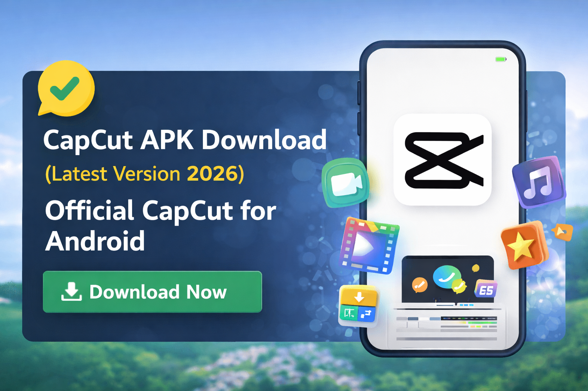

If you are looking for the CapCut APK download, you are likely searching for the latest version that works smoothly on your Android device. CapCut is one of the most popular video editing apps in the world. It is used by content creators, YouTubers, TikTok users, Instagram reel makers, and even small business owners who want clean and professional videos directly from their phones.

CapCut APK is the Android installation file of the CapCut video editing application. APK stands for Android Package Kit. When you download the CapCut APK, you are downloading the installer file that allows you to install the app manually on your Android device.
Many users search for terms like capcut apk, capcut download apk, or capcut app download apk when they want to install the app outside the Play Store or when the Play Store version is not available in their region.
CapCut offers powerful editing tools in a simple interface. You do not need professional editing experience. The app is designed so beginners can edit easily while advanced users still get detailed control over their projects.
If you want the CapCut APK download latest version, always make sure you are getting the official and clean file. Installing unknown or modified files can harm your device or cause privacy risks.
The latest 2026 update improves performance, adds smoother transitions, expands template libraries, and enhances export speed. It also improves stability on mid-range Android devices.
Before installing CapCut APK manually, you need to allow installation from unknown sources in your Android settings:
After installation, open the app and sign in to access cloud features and templates.
CapCut offers a free version and a Pro subscription inside the app. Many users search for CapCut Pro APK download when they want premium tools. The official Pro version unlocks advanced templates, exclusive effects, premium fonts, and extended cloud storage.
Pro users get access to:
The safest way to access Pro features is through the official subscription inside the app.
CapCut provides multi-layer editing. You can add multiple video clips, images, text layers, and audio tracks on a single timeline. Trimming, splitting, cutting, and merging clips is simple and smooth.
The app includes trending TikTok effects, slow motion tools, motion blur, glitch effects, and color grading presets. These tools help your videos look polished and modern.
You can add background music, voiceovers, sound effects, and adjust audio speed. There is also text-to-speech support in many languages.
CapCut allows exporting videos in high resolution including 1080p and 4K, depending on your device capability.
The process usually takes less than two minutes on most devices.
CapCut is also available for Windows and Mac. You can download the desktop version from the official CapCut website. Some users install the Android version using emulators, but the official desktop version provides better performance.
| Requirement | Minimum |
|---|---|
| Android Version | 7.0+ |
| RAM | 3GB (4GB recommended) |
| Storage Space | 500MB free space |
| Internet | Required for templates and cloud features |
The official CapCut APK is safe when downloaded from trusted sources. Always scan files before installing. Avoid modified or altered versions that claim unlocked premium features without subscription. These versions can contain malware or spyware.
Your device security and personal data are important. Installing only verified files protects you from unnecessary risks.
Yes, the basic version is free. You can upgrade to Pro for additional features.
Yes. Download the latest version and install it over the previous one.
You can edit offline, but templates and cloud services require internet access.
Yes. The interface is clean and easy to understand.
CapCut remains one of the best video editing apps for Android users in 2026. It combines simple design with powerful editing tools. Whether you are creating short social media clips or detailed YouTube content, CapCut provides the flexibility you need.
If you are searching for capcut apk download or capcut download apk latest version, always choose a safe and official source. Protect your device, keep your data secure, and enjoy professional video editing directly from your phone.